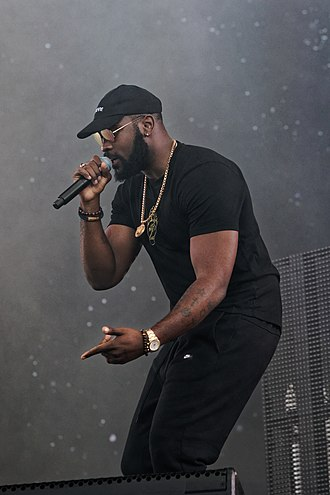

Damso, de son vrai nom William Kalubi Mwamba, né le 10 mai 1992 à Kinshasa (Zaïre, actuelle République démocratique du Congo), est un rappeur et auteur-compositeur-interprète belgo-congolais. Actif dans le monde du rap depuis 2006, Damso débute dans la publication de projets avec sa première mixtape Salle d'attente, sortie en 2014. Il voit sa carrière vraiment décoller en 2015, lorsqu'il est repéré par Booba. Il intègre alors le collectif et label 92i, et signe chez Universal Music France. Il est aussi connu pour son appartenance à la nouvelle vague du rap belge des années 2010 avec des artistes tels que Hamza ou Shay.
Damso sort son premier album Batterie faible en 2016, certifié double disque de platine. Son second album Ipséité, sorti en 2017, connaît un grand succès en France et en Belgique. Il est certifié disque de diamant en France et disque de platine en Belgique. Son troisième album, Lithopédion, sort le 15 juin 2018 et est certifié triple disque de platine en France et disque d'or en Belgique. Il remporte le prix du meilleur album rap aux Victoires de la musique 2019. Le 18 septembre 2020, il sort son album QALF, annoncé plusieurs fois, sans en dévoiler de véritables informations, mise à part le nom de ce projet. L'album est disque d'or en France 10 jours après sa sortie.